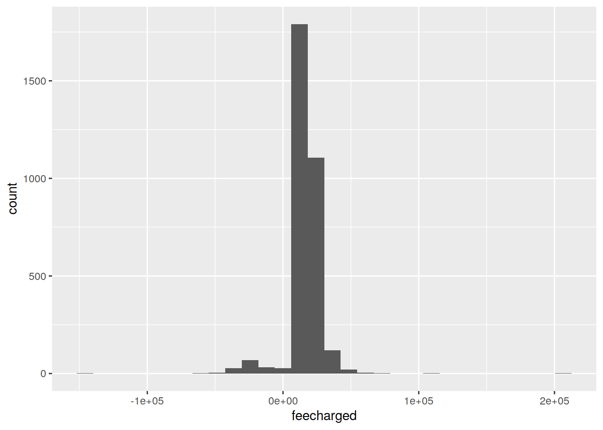
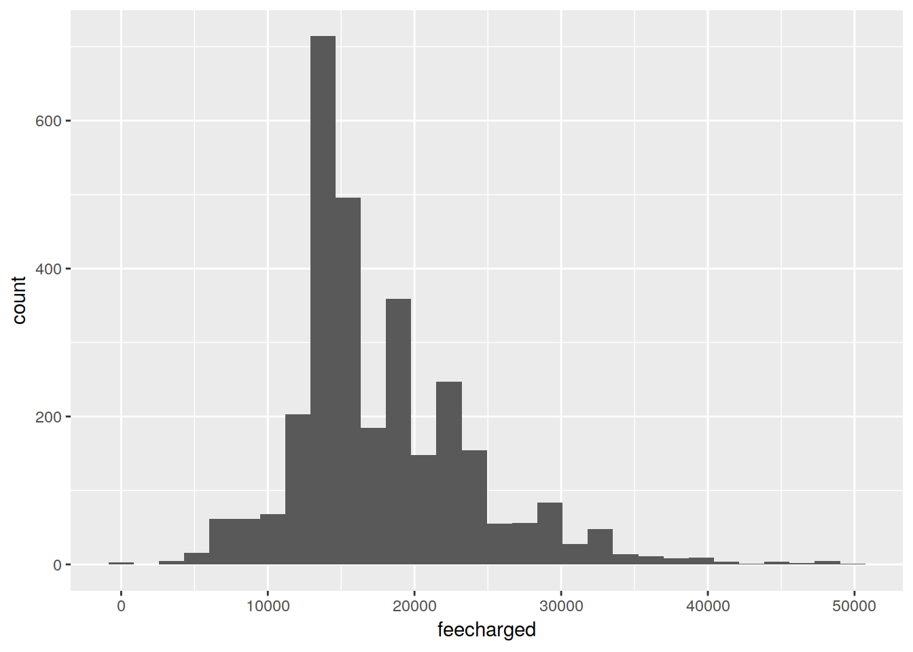
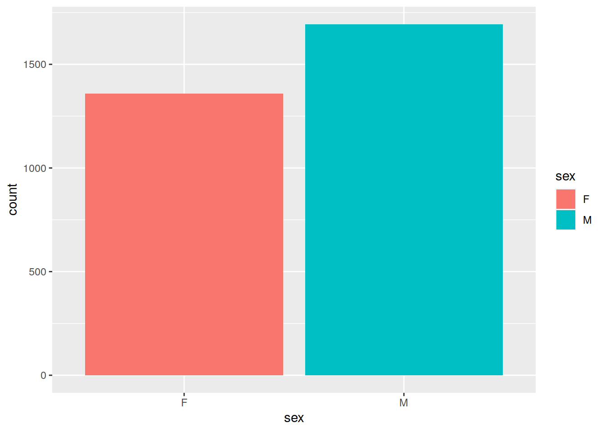
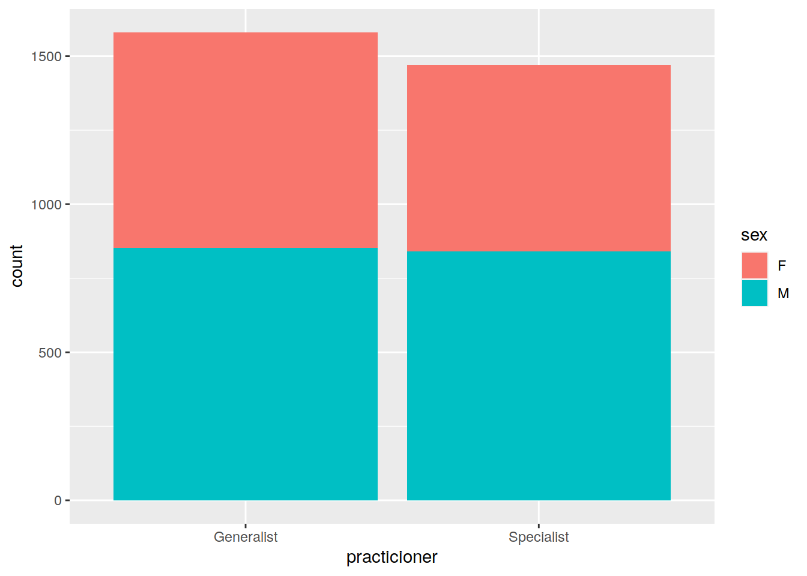
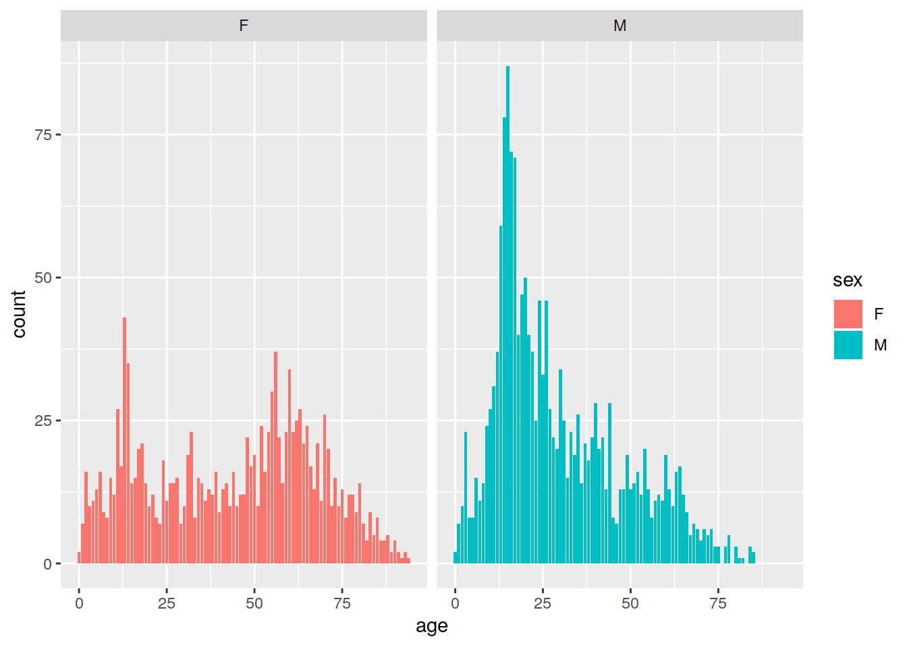
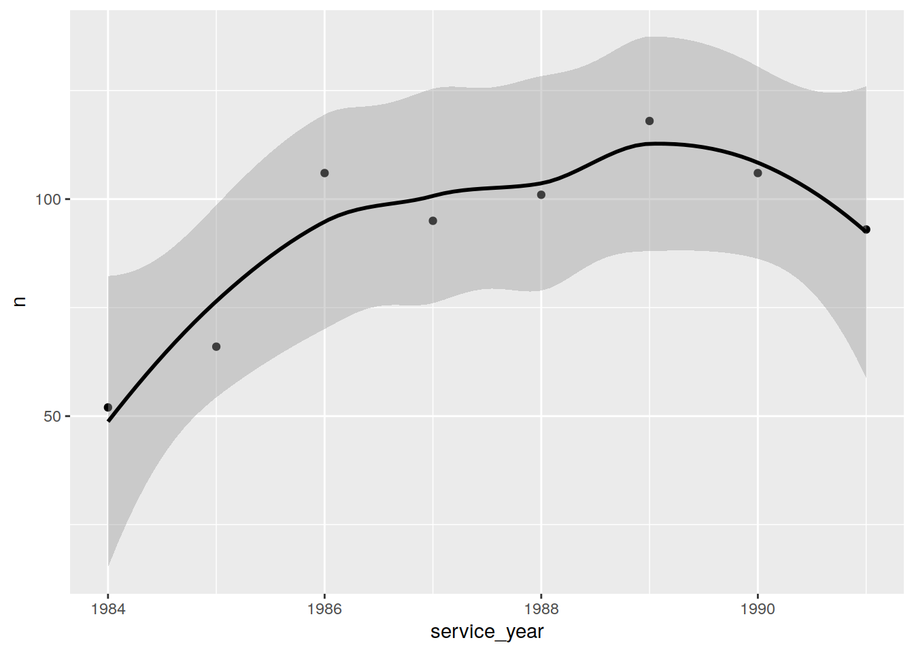

Tutorial 4 - Statistics
Last updated: 2019-05-30
Checks: 5 1
Knit directory: tutorials_workflowr/
This reproducible R Markdown analysis was created with workflowr (version 1.3.0.9000). The Checks tab describes the reproducibility checks that were applied when the results were created. The Past versions tab lists the development history.
Great! Since the R Markdown file has been committed to the Git repository, you know the exact version of the code that produced these results.
Great job! The global environment was empty. Objects defined in the global environment can affect the analysis in your R Markdown file in unknown ways. For reproduciblity it’s best to always run the code in an empty environment.
The command set.seed(20190513) was run prior to running the code in the R Markdown file. Setting a seed ensures that any results that rely on randomness, e.g. subsampling or permutations, are reproducible.
Nice! There were no cached chunks for this analysis, so you can be confident that you successfully produced the results during this run.
Great! You are using Git for version control. Tracking code development and connecting the code version to the results is critical for reproducibility. The version displayed above was the version of the Git repository at the time these results were generated.
Note that you need to be careful to ensure that all relevant files for the analysis have been committed to Git prior to generating the results (you can use wflow_publish or wflow_git_commit). workflowr only checks the R Markdown file, but you know if there are other scripts or data files that it depends on. Below is the status of the Git repository when the results were generated:
Ignored files:
Ignored: code/analysis/
Note that any generated files, e.g. HTML, png, CSS, etc., are not included in this status report because it is ok for generated content to have uncommitted changes.
These are the previous versions of the R Markdown and HTML files. If you’ve configured a remote Git repository (see ?wflow_git_remote), click on the hyperlinks in the table below to view them.
| File | Version | Author | Date | Message |
|---|---|---|---|---|
| html | 3106988 | Dennis Wollersheim | 2019-05-20 | Build site. |
| html | f3d651f | Dennis Wollersheim | 2019-05-20 | Build site. |
| html | e0d2c99 | Dennis Wollersheim | 2019-05-20 | Build site. |
| Rmd | 27a9375 | Dennis Wollersheim | 2019-05-20 | topush |
| html | 27a9375 | Dennis Wollersheim | 2019-05-20 | topush |
| html | 08837f8 | Dennis Wollersheim | 2019-05-17 | finished tutorial 4 |
| Rmd | 95874d8 | Dennis Wollersheim | 2019-05-17 | finished tutorial 4 |
| Rmd | 5f8784b | Dennis Wollersheim | 2019-05-15 | finished tutorial 3 |
Statistics in R
Merilyn has asked you to do some statistics on her AHB assignment. This section will show you how to do this. We will retrieve some fracture information from the PBS database, and see if there is a difference between male and female occurence of fracture.
The dataset includes the fracture description, patient sex and year of birth, and both the fee charged and the scheduled fee. Again, start this tutorial using a new RScript file, and load the tidyverse library.
library(tidyverse)── Attaching packages ────────────────────────────────── tidyverse 1.2.1 ──✔ ggplot2 3.1.1 ✔ purrr 0.3.2
✔ tibble 2.1.1 ✔ dplyr 0.8.1
✔ tidyr 0.8.3 ✔ stringr 1.4.0
✔ readr 1.3.1 ✔ forcats 0.4.0── Conflicts ───────────────────────────────────── tidyverse_conflicts() ──
✖ dplyr::filter() masks stats::filter()
✖ dplyr::lag() masks stats::lag()library("RPostgreSQL")Loading required package: DBIquery <- "
SELECT m.feecharged, m.schedfee, m.item, m.service_date, d.description, p.sex, p.yob
FROM mbs m
JOIN mbs_desc_latest d USING (item)
JOIN patient p USING (pin)
where item in ('07647', '07652');
"
con <- dbConnect(dbDriver("PostgreSQL"),
dbname = 'pbs',
host = "himsql7.latrobe.edu.au", port = 5432,
user = "dewollershei-test", password = "healthGuru")
#
fracture <- dbGetQuery( con, query ) %>% as_tibble()
#
fracture# A tibble: 3,206 x 7
feecharged schedfee item service_date description sex yob
<dbl> <dbl> <chr> <date> <chr> <chr> <int>
1 11200 12200 07647 1984-01-30 Ankle (Pott's fractu… M 1954
2 13400 14400 07647 1986-09-24 Ankle (Pott's fractu… F 1969
3 14000 16000 07647 1988-09-22 Ankle (Pott's fractu… F 1923
4 7400 8400 07647 1990-06-14 Ankle (Pott's fractu… F 1938
5 15000 17600 07647 1991-03-11 Ankle (Pott's fractu… M 1981
6 21500 17200 07652 1984-05-26 Ankle (Pott's fractu… F 1927
7 28936 17200 07652 1984-03-30 Ankle (Pott's fractu… M 1956
8 19400 19400 07652 1985-10-10 Ankle (Pott's fractu… F 1919
9 6645 7275 07652 1986-12-04 Ankle (Pott's fractu… F 1924
10 22455 21825 07652 1986-12-04 Ankle (Pott's fractu… F 1924
# … with 3,196 more rows#
dbDisconnect( con )[1] TRUENotice that we now have a new variable in the top right environment pane, called fracture. Click on it to investigate it. Close it when you are finished.
Fracture dataset
The process of data science

Data Science Exploration Process (Grolemund & Wickham, 2017
Data science is the process of getting data, and manipulating , visualizing and modelling it. This is this week’s task.
Data Transformation
In the previous tutorials, we used pipes to select and summarise the data. In this section, we will use pipes to mutate the data, adding calculated fields.
We will add five fields to the fracture dataset: charge_status, practicioner, service_year, age, and age_group_10 (10 year age group). The data flows through a pipe, using the mutate function to add (or change) a field.
fracture -> mutate -> fracture.
The mutations use transformation functions: ifelse, substring, as.integer, and cut.
The function ifelse is similar to the if function in Excel. It takes 3 arguments:
1. a condition, 1. the return value if the condition is true, and 2. the return value if the condition is false.
It is useful for creating categorical variables.
The cut function slices a continuous variable into chunks, in this case, 10 year age groups. l;
library(tidyverse)
# we say it was overcharged if the practicioner charged more than the scheduled fee
fracture <-
fracture %>%
mutate( charge_status = ifelse( feecharged > schedfee,
"overcharged",
"standard charge") )
# 07647 is the generalist code
fracture <-
fracture %>%
mutate( practicioner = ifelse( item=='07647',
"Generalist",
"Specialist") )
# The year is the first 4 digits of the date
fracture <-
fracture %>%
mutate( service_year = as.integer( substring( service_date, 1, 4 )))
# first calculate the age at the time of service, and
# then use cut to slice up the ages into 10 year age groups
# note you can do 2 mutations in the same sentence
fracture <-
fracture %>%
mutate( age = service_year - yob,
age_group_10 = cut(age, breaks=10*(0:12))) Exercises
- Highlight and run
0:12in the above sentence. What does it do? Highlight and run10*(0:12). What does it do?
- What R phrase would create a list of numbers between 1 and 100? How about the even numbers between 1 and 100? What about the numbers 20,40,60,80 and 100?
- Create another field in
fractureto hold 20 year age groups.
Visualise and clean the fractures dataset
What is the range and distribution of the fee charged field?
ggplot( fracture ) +
geom_histogram ( mapping=aes(x=feecharged))`stat_bin()` using `bins = 30`. Pick better value with `binwidth`.
| Version | Author | Date |
|---|---|---|
| 08837f8 | Dennis Wollersheim | 2019-05-17 |
Note that feecharged ranges from -150,000 to 200,000. We will eliminate outliers, using a pipe to filter out these values. In the filter expression, & means AND. The histogram has improved.
# we want the records that have feecharged between 0 and 50000
fracture <-
fracture %>%
filter( feecharged >=0 & feecharged <50000)
ggplot( fracture ) +
geom_histogram ( mapping=aes(x=feecharged))`stat_bin()` using `bins = 30`. Pick better value with `binwidth`.
| Version | Author | Date |
|---|---|---|
| 08837f8 | Dennis Wollersheim | 2019-05-17 |
Create a model of gender and ankle fractures
What gender gets these ankle fractures? A good first step is to plot the data.
ggplot( fracture, mapping=aes(x=sex, fill=sex) ) +
geom_bar( ) 
| Version | Author | Date |
|---|---|---|
| 08837f8 | Dennis Wollersheim | 2019-05-17 |
Statistical Significant Differences - Chi Squared test
There appears to be a difference between the number of men and women who get ankle fractures. Is this difference statistically significant? The chi squared test answers this question. We select the sex field from fracture , and then pipe it into the table function. table counts the number of levels of each variable, in this case, M and F.
fracture %>%
select(sex) %>%
table() .
F M
1358 1694 chisq.test performs the chisquared test. If P-value is less than 0.05, the difference is significant. This means that this difference would happen by chance less than 5 / 100 times.
fracture %>%
select(sex) %>%
table() %>%
chisq.test()
Chi-squared test for given probabilities
data: .
X-squared = 36.991, df = 1, p-value = 1.187e-09The chi squared test above tells us that this difference, between men and women, is not due to chance. Note, the value is expressed in scientific notation (p-value = 1.187e-09), because it is so small. In regular notation, this would be 0.0000000001187!
Exercises
- Is there a significant difference between generalist and specialist attendences?
- Is there a significant difference between the genders in the 40-50 year old range? (hint: use filter to exclude the other ages )
Modelling gender and specialist seeking behaviour
Are women or men more likely go to specialists? Again, we first plot the data.
ggplot( fracture, mapping=aes(x=practicioner, fill=sex) ) +
geom_bar( ) 
| Version | Author | Date |
|---|---|---|
| 08837f8 | Dennis Wollersheim | 2019-05-17 |
Again, the graph alone does not answer the question. It appears that more women go than men, but this might be due to chance. Let’s do a 2 variable chisquared test.
fracture %>%
select(sex, practicioner) %>%
table() %>%
chisq.test()
Pearson's Chi-squared test with Yates' continuity correction
data: .
X-squared = 3.0677, df = 1, p-value = 0.07986The chi squared test rejects this hypothesis that women are more likely to go to specialists, this difference may be due to chance.
For more information on use of chisquared test in R, see: https://web.stanford.edu/class/psych252/cheatsheets/chisquare.html
Exercises
- Are specialists more likely to overcharge than generalists? (answer below)
Modeling - is there a difference between two groups?
Do the different genders break their their ankles at different ages? We first visualise.
ggplot( fracture, mapping=aes(x=age, fill=sex) ) +
geom_bar( ) +
facet_wrap( ~sex )
| Version | Author | Date |
|---|---|---|
| 08837f8 | Dennis Wollersheim | 2019-05-17 |
It appears that men break their ankle in their youth, while women (except for those 2 years of netball) are more likely to break their ankle when they get older.
A t-test can show if the set of male ages are significantly different from the set of female ages.
t.test( age~sex, data=fracture)
Welch Two Sample t-test
data: age by sex
t = 18.157, df = 2483.4, p-value < 2.2e-16
alternative hypothesis: true difference in means is not equal to 0
95 percent confidence interval:
12.67584 15.74534
sample estimates:
mean in group F mean in group M
43.57364 29.36305 Again, because the p-value is less than .05, the different is unlikely due to chance.
Exercises
- Is the age range different for people who go to specialist vs generalists?
- Is the age range different for people who are overcharged?
Modelling - is the price increasing over time?
Is the incidence of overcharging increasing over time? To visualise this, we count the number of overcharges per year, and plot them. When we use ggplot as part of a pipe, we don’t need to include ggplot( fracture ), because the dataset is piped into ggplot.
fracture %>%
filter( charge_status == 'overcharged') %>%
count( service_year ) %>%
ggplot( mapping=aes(x=service_year, y=n ) ) +
geom_point( ) +
geom_smooth(color='black')`geom_smooth()` using method = 'loess' and formula 'y ~ x'
| Version | Author | Date |
|---|---|---|
| 08837f8 | Dennis Wollersheim | 2019-05-17 |
It is hard to tell if this is a real increase. We can model it as a linear model, and see if the increase is significant.
fracture.lm <-
fracture %>%
filter( charge_status == 'overcharged') %>%
count( service_year ) %>%
mutate( years = as.integer( service_year - min(service_year ))) %>%
lm( years ~ n, data=. )
summary( fracture.lm )
Call:
lm(formula = years ~ n, data = .)
Residuals:
Min 1Q Median 3Q Max
-2.5684 -0.5497 -0.4492 0.2203 3.4326
Coefficients:
Estimate Std. Error t value Pr(>|t|)
(Intercept) -3.5940 3.0593 -1.175 0.285
n 0.0770 0.0324 2.377 0.055 .
---
Signif. codes: 0 '***' 0.001 '**' 0.01 '*' 0.05 '.' 0.1 ' ' 1
Residual standard error: 1.899 on 6 degrees of freedom
Multiple R-squared: 0.4849, Adjusted R-squared: 0.3991
F-statistic: 5.649 on 1 and 6 DF, p-value: 0.05501The model says that this is not a linear trend.
Merilyn’s AHB assignment
In Merilyn’s AHB assignment, you have to :
- Using the ICD10 code(s) for your disease, connect to the vaed_full database and retrieve your admissions
- Is there a significant diffence in the incidence of your disease between the genders ?
- Choose 2 versions of your disease. Is there a significant difference between the length of stay (LOS) for these 2 versions?